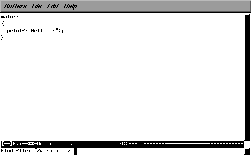
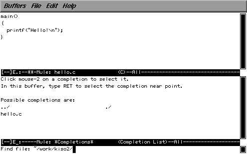

ソースプログラムの修正とコンパイル／実行を繰り返すときは、 mule をバックグラウンドで起動しておくと便利です。
mule をバックグラウンドで起動するには、次のようにします。
% mule hello.cc &[Enter] |
こうするとすぐにコマンド待ち状態に戻りますが、 mule のウインドウも開きます。 その状態でプログラムを作成／修正してください。
C-x C-s をタイプすると mule を終了せずにファイルが保存できるので、 そのままもとのウィンドウでプログラムをコンパイル／実行できます。 また mule において C-x C-f をタイプすれば、 mule の中からファイルを開くこともできます。
| mule を終了せずにファイルを保存する | C-x C-s |
| 名前をつけてファイルを保存する | C-x C-w |
| mule の中からファイルを開く | C-x C-f |
C-x C-f をタイプすると、 mule のウィンドウの下部に 次のような問い合わせが表示されます。 ここにファイル名をタイプしてください。

ファイル名をタイプしている途中でスペースやタブをタイプすると、 ファイル名の補完や一覧表示をしてくれます。

目的のファイル名がタイプできたら、 最後にリターンキーをタイプしてください。